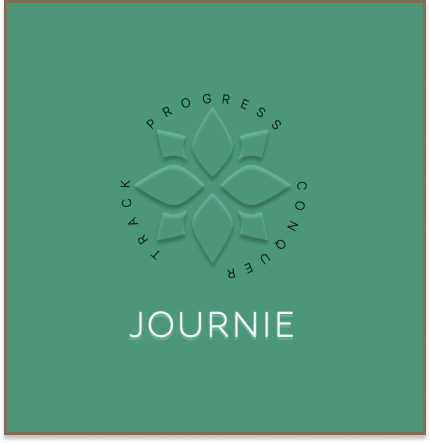
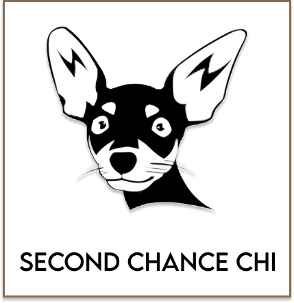

Work
About
Contact
Dribbble
LinkedIn
MY WORK

JOURNIE
Mobile App Inspiration & Creation
A user-centric gym application meticulously crafted based on extensive user research and a deep understanding of fitness enthusiasts' pain points. With a seamless and intuitive interface, Journie empowers users to effortlessly track their fitness progress and achieve their goals.

Second Chance Chi
NPO Website Research & Redesign
SCC is a non-profit organization dedicated to the well-being and welfare of animals. We understand the importance of a user-friendly platform that seamlessly connects animal lovers with adoption opportunities. That's why we embarked on a website redesign journey based on extensive user research to identify pain points and create an intuitive and engaging experience for all.
Utah Air Quality
Government Website Redesign
Utah Air Quality is a government organization dedicated to providing accurate and up-to-date information on air quality within Utah. We understand the importance of a user-friendly platform that empowers individuals to make informed decisions about their health and well-being. Therefore, we took on the challenge of doing a complete redesign of this outdated website to improve it standing in a modernized world.